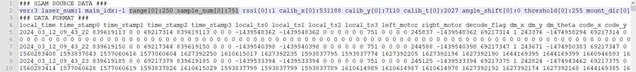
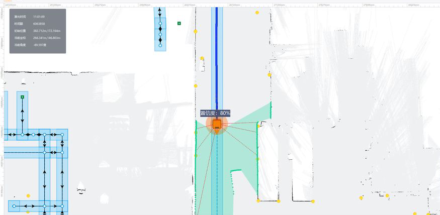
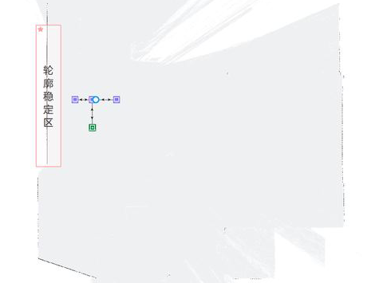
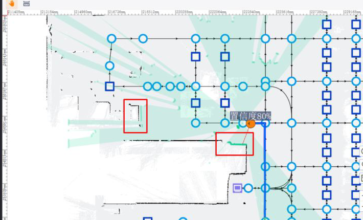
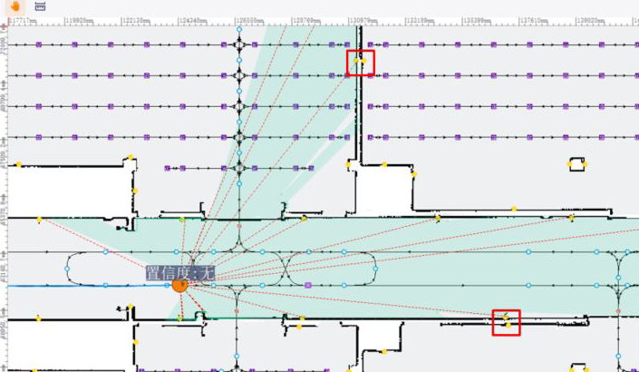

L-SLAM 定位异常的分层排查
机器人出现走偏、定位跳变、固定点走过或无法上线时，不能只凭一次现象直接改地图。本篇按现场排查顺序整理日志留存、导航激光识别、SLM 回放、导航参数与特征区检查，再用轮廓匹配区分环境干扰、局部或全局尺度问题及反光条误匹配，给出可复核的处理和验收依据。
地图与定位目录
本篇为基于厂商操作手册的原创整理，只提炼流程与判断方法，不复制原文；不同版本与控制器存在差异，结论请结合现场验证使用。
阶段一 · 固定现象并保护现场数据
先把“定位不准”拆成可复现的现象，再决定查配置、环境还是地图。记录发生时间、区域、运行方向、当时坐标和现场动态物体，在调整地图前保留原始日志与地图版本。
| 现场现象 | 优先观察 | 初步判断方向 |
|---|---|---|
| 走偏 | 实时轮廓、地图轮廓及相近反光条 | 动态干扰、环境变化或误匹配 |
| 固定位置走过 | 同一区域左右两侧匹配是否一致 | 局部或全局地图尺度 |
| 某区域频繁跳变 | 跳变前后轮廓是否被强行对齐 | 参照物变化或地图尺度 |
| 空旷区域无法上线 | 置信度及稳定轮廓数量 | 特征不足，可评估轮廓稳定区 |
判断依据：后续所有结论都要能回到同一时间段的回放画面验证；只看最终停车位置，无法区分尺度、反光条和动态遮挡。
阶段一 · 按主控版本取齐日志与地图
激光定位问题至少收集SLAM 地图、拓扑地图、AGV、RCD、导航激光和 SLAM_LOG 日志。激光日志保存时间较短，发现异常后应先保存，再做回放。
| 版本 | AGV / RCD | 导航激光 | SLAM_LOG | 使用要点 |
|---|---|---|---|---|
| 4.X 之前 | mnt 目录 | mnt/slam_data | mnt/slam_log | 用终端工具分别下载；激光日志解压为 txt 后回放核查 |
| 4.X | mnt/agv_logmnt/rcd/data | mnt/lidar_***/data | mnt/llc_log_***/data | 可在 MapStudioPro 勾选“定位相关问题”一键下载，激光日志可直接回放 |
- 按版本核对目录，不能只拿 AGV 日志；缺少导航激光或 SLAM_LOG 时无法完整还原匹配过程。
- 4.0 主控可能未自动选入 SLAM_LOG，客户端勾选问题类型后，还要确认下载包中是否包含
llc日志。 - 使用解决 eMMC 问题的主控版本（原文指 2024 年 4 月后的版本）时，默认低频记录可能无法回放激光数据，应将日志模式改为全频模式（实际频率模式）后重新采集。
低频日志、缺少 llc 日志或拿错避障激光数据，都会造成“回放没有异常”的假象。开始分析前先核对文件时段、目录和日志频率。
阶段二 · 多激光设备先认准导航激光
4.X 设备存在多个同型号激光时，不能只按文件名猜测。登录机器人后执行 castor_hw_show，在激光信息中同时核对 usage 和安装位置 x、y，再进入对应的 mnt/lidar_***/data 目录下载。
| usage 值 | 用途 | 是否作为本次导航日志来源 |
|---|---|---|
| 1 | 导航激光 | 是 |
| 2 | 避障激光 | 否，除非另有专项分析需求 |
| 3 | 导航 + 避障激光 | 是 |
| 258 | 顶部导航激光 | 是 |
判断依据：导航用途确定后，还要用安装位置区分同型号设备；用途和位置均一致，才能确定应下载的激光目录。其他 usage 数值不属于本篇所需范围。
阶段二 · 区分 SLM 版本并选择回放数据
在客户端添加激光地图和拓扑地图，再导入激光日志。4.X 之前的 SLM 日志有新老两种结构：老版本没有 JSON 头，直接记录数据；新版本带 JSON 头，记录机器人尺寸、激光型号及参数等。导入后，老版本的激光类型下拉框明亮，需要手选；新版本下拉框变暗，类型自动匹配。
- 老版本打开日志，找到
range[0]与sample_num[0]，按原文公式sample_num[0] ÷ range[0]计算。 - 原文列出的有效结果为 6、4、3，分别对应三种激光类型。公开篇不展开厂牌型号，现场应按原配置或设备资料核对后选择；无法对应时直接询问现场，不要猜型号。
- 核查会匹配反光条，因此激光类型必须正确；仅回放时型号影响较小，也不能把错误类型带入核查。
- 多激光 SLM 日志在一个时间节点下按行记录各激光数据。持续有数据、其他行出现整行 0 的那一行才是导航数据；回放和核查的激光编号应与行号一致，第一行选 1。

range[0] 和 sample_num[0]。截图仅示意字段位置，激光类型仍须按原文计算关系与现场设备资料确认。阶段三 · 按机器人类型核对导航参数
回放前先检查激光导航参数。不同机型的要求相反，不能因为另一台车运行正常就照抄开关。
| 参数 | 适用机型与取值 | 作用及判断依据 |
|---|---|---|
| 反光条上线 | 叉取机器人专用，依赖反光条上线时打开 | 扫描到五个及以上反光条后自动上线；非该场景不要据此处理 |
| 里程计融合开关 | 潜伏机器人打开；叉取机器人不可打开 | 潜伏机型融合舵轮与激光里程计；叉取机型舵轮里程计误差较大，打开反而影响定位 |
| 高反光场景 | 叉取机器人按现场选择 | 用于纯反光条定位且环境中存在易被误识别为反光条物体的场景 |
- 潜伏机器人只打开里程计融合开关，再验证异常是否仍复现。
- 叉取机器人先确认里程计融合未打开，再根据上线方式与现场反光条件决定另外两个开关。
- 每次只变更有明确依据的参数，并记录改前值；修改后回到同一位置回放或实测，避免多项同时变化导致无法归因。
阶段四 · 用激光无效区隔离动态干扰
长通道主要依赖两侧墙面定位，前方缺少稳定参照时，人工叉车等动态物体容易把匹配拉偏。车道线可从平台导入拓扑地图后直接添加；覆盖不到的车道外干扰区域，再用激光无效区补充。
- 回放走偏区域，对比绿色实时轮廓与黑色地图轮廓，定位到二者开始分离的时刻。
- 逐帧查看分离前后是否有动态物体进入扫描范围；若物体出现后偏差同步扩大，可判断其参与并干扰了定位。
- 在该动态物体运行、但不应参与定位的轮廓区域添加激光无效区；框选轮廓将不再参与定位计算。
- 回到原主通道实测，确认实时轮廓重新贴合地图且走偏不再出现，再保留该配置。

阶段四 · 谨慎使用轮廓稳定区提升上线置信度
轮廓稳定区会提高框选轮廓的得分，适用于长期不变的墙面等结构。原文空旷场地案例中，机器人靠近左侧墙面但无法上线，该案例的上线要求为置信度 68%；可将左侧固定墙面框为轮廓稳定区，重新上传地图后再验证上线。
- 先确认待框选轮廓不会随门、货架或临时设施移动。
- 只框选能够提供方向或前向参考的局部稳定轮廓，上传地图并重新观察置信度。
- 达到现场实际上线阈值且机器人能稳定上线后，再做原路径复测；68% 是该案例取值，其他现场以实际要求为准。

动态轮廓被加分会持续误导定位；若几乎所有墙面都被框成稳定区，所有轮廓一起加分，效果等同于全部不框。出现此情况应缩减到真正稳定且有区分度的轮廓。
阶段五 · 区分局部与全局地图尺度问题
固定点总是走过、同一点不同方向停车位置不同，或某区域反复跳变时，应重点检查地图尺度，而不是先调停车补偿。
| 类型 | 回放证据 | 处理 |
|---|---|---|
| 局部尺度 | 右侧轮廓可匹配而左侧持续不匹配，或只有小范围区域无法对齐 | 擦除问题区域轮廓，再通过核查补齐 |
| 全局尺度 | 左侧对齐后右侧明显无法对齐，整段地图从左到右均存在尺寸差 | 用现有数据离线建图并普通拼接，对比两张地图尺寸；确认后整个区域重新扫图 |
- 沿运行方向连续回放，记录哪一侧先失配、是否在被强制对齐时出现定位拉动。
- 同一点换方向回放；原文案例中不同方向停车位置相差约 50 cm，且反光条观测位置不同，应继续做离线建图对比。
- 参照物被强制匹配后，定位拉动幅度超过 200 mm 时运动库会告警跳变；较小时则表现为多走或少走。

直接核查无法修复错误尺度。小范围先擦除再核查补齐；全局尺度错误必须重新扫图，不能用反复核查替代。
阶段五 · 排查反光条误匹配与环境变更
固定区域走偏且轮廓大体稳定时，继续检查反光条。原文案例中，墙的两面在相近位置都贴了反光条，机器人匹配到错误反光条后走偏。
- 同时观察轮廓和反光条匹配，核对是否因相似轮廓、相近反光条或墙体只建了一面轮廓而误匹配。
- 若两面墙反光条距离过近，可撕掉其中一面的反光条并删除地图对应标识，或调整位置后重新核查地图。
- 现场整改必须满足两个反光条之间距离不得小于 50 cm（500 mm）；改后要同步更新地图，不能只改现场或只改地图。
- 若只是普通环境轮廓变化，核查地图更新轮廓通常可解决；若属于误匹配，必须继续追踪反光条和墙体轮廓，而非只看置信度。

收尾与注意事项
- 先留证再修改：保存原始 SLAM 地图、拓扑地图及全部定位相关日志，记录每次配置和地图版本。
- 先单一变量验证：导航开关、无效区、稳定区和反光条不要同时改；每项处理后回到原时间或原路径复核。
- 按证据选处理：动态干扰用无效区，稳定特征不足才用稳定区，局部尺度擦除后补齐，全局尺度重新扫图。
- 守住硬约束：反光条间距不得小于 500 mm；案例中的 68% 置信度、50 cm 停车差和 200 mm 跳变判断应结合各自场景理解。
- 完成双向复测：在原异常区域按原运行方向及反方向重复运行，确认轮廓与反光条匹配稳定，无新增跳变、走偏或停车差后再归档。
仍未解决时，整理脱敏后的发生时段、现象、地图版本、回放结论及完整日志，再升级排查；不要只提供一张最终告警截图。
上线前核对
- 已记录异常时间、区域、方向和坐标，并在改图前保存原始地图与日志
- 已按主控版本取齐 AGV、RCD、导航激光、SLAM_LOG、SLAM 地图和拓扑地图
- 需要全频日志的版本已切换为全频模式，4.0 下载包已确认包含 llc 日志
- 多激光设备已用 castor_hw_show 的 usage 与安装位置锁定导航激光目录
- SLM 新老版本、激光类型及多激光数据行号均已核实，未凭文件名猜测
- 潜伏或叉取机型的里程计融合、反光条上线和高反光场景开关符合各自要求
- 已通过连续回放确认动态干扰、局部失配或全局尺度问题的具体证据
- 轮廓稳定区仅框选固定轮廓且数量适当，修改后已重新上传地图验证
- 反光条间距不小于 500 mm，现场位置与地图标识已同步更新
- 原异常区域已完成原方向及反方向复测，并归档改前改后地图和配置